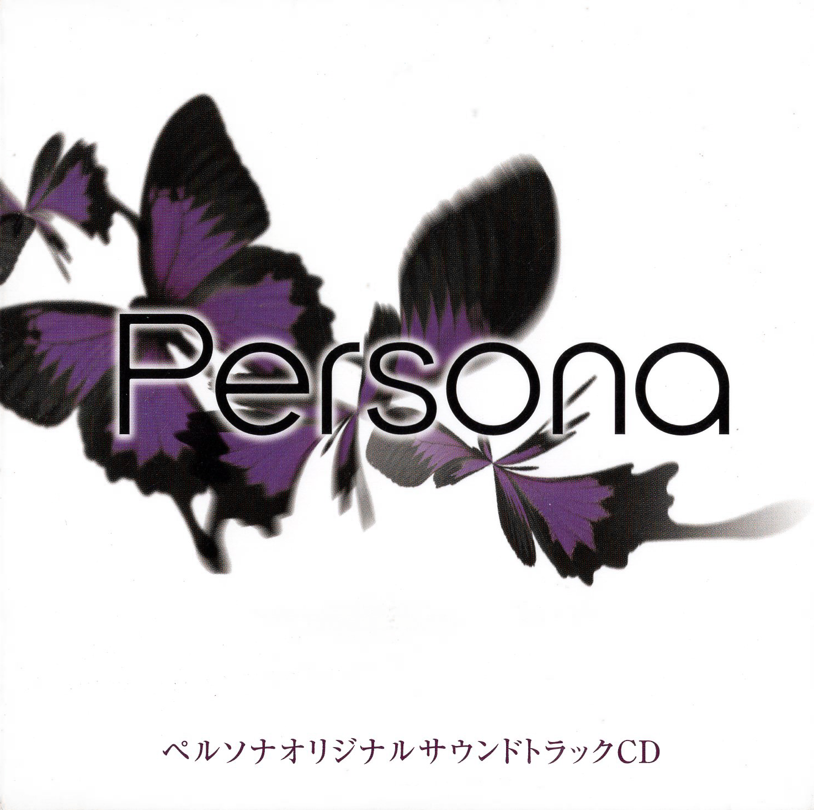
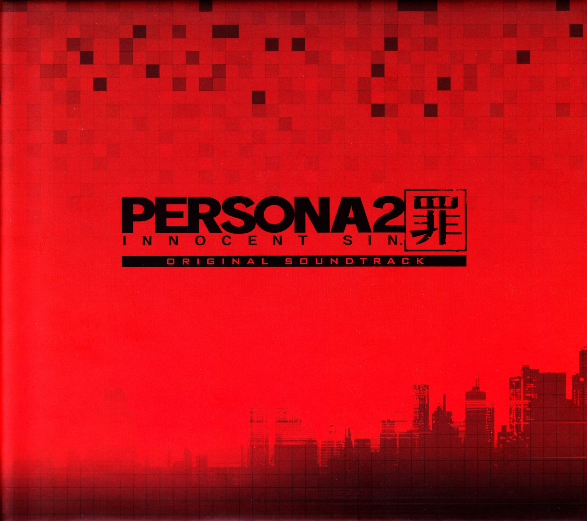
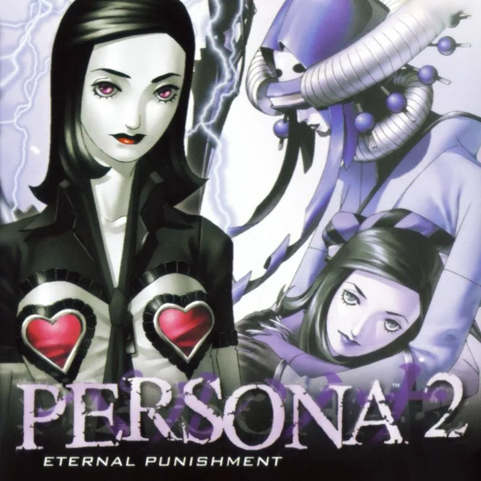
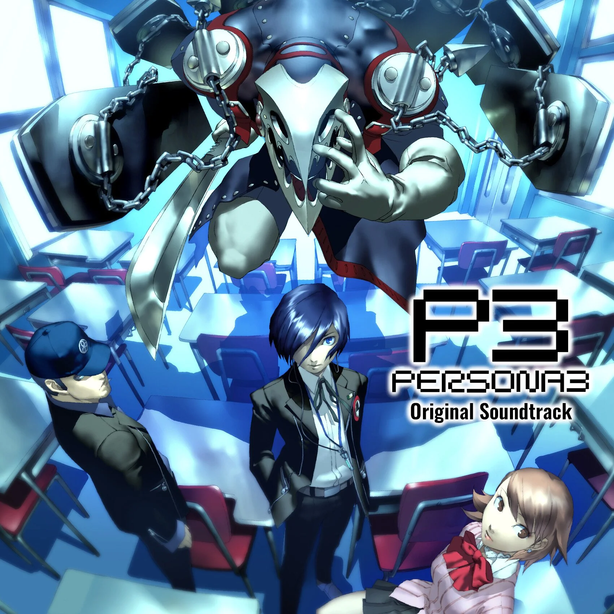
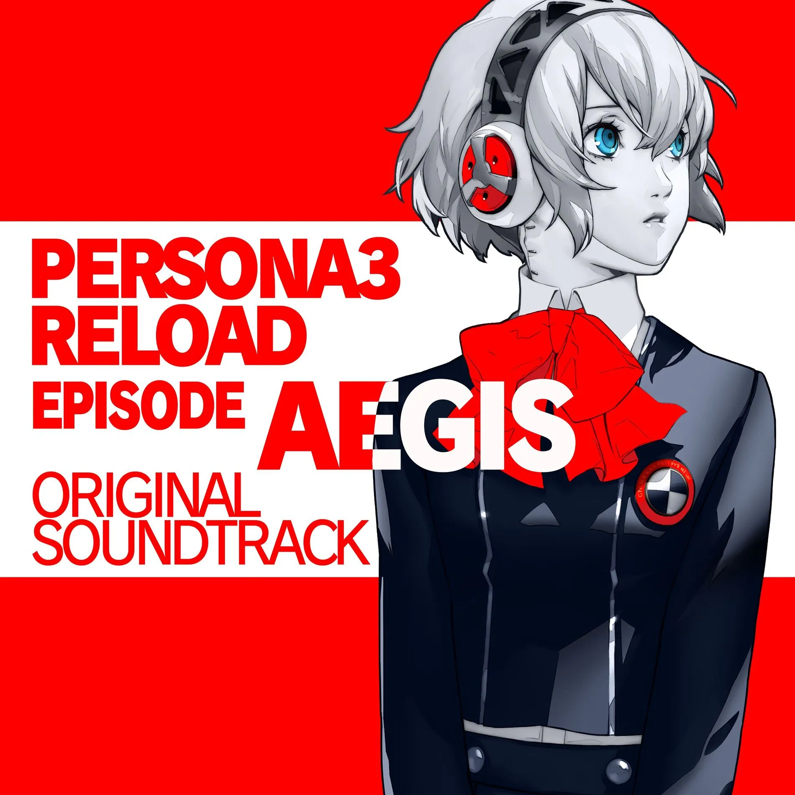
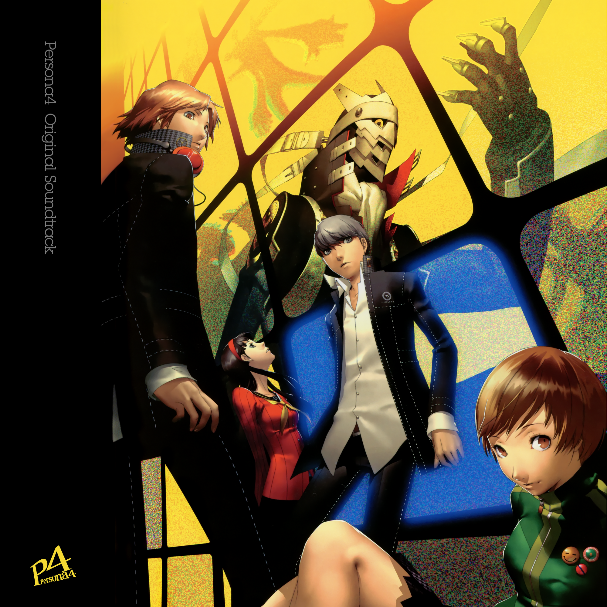
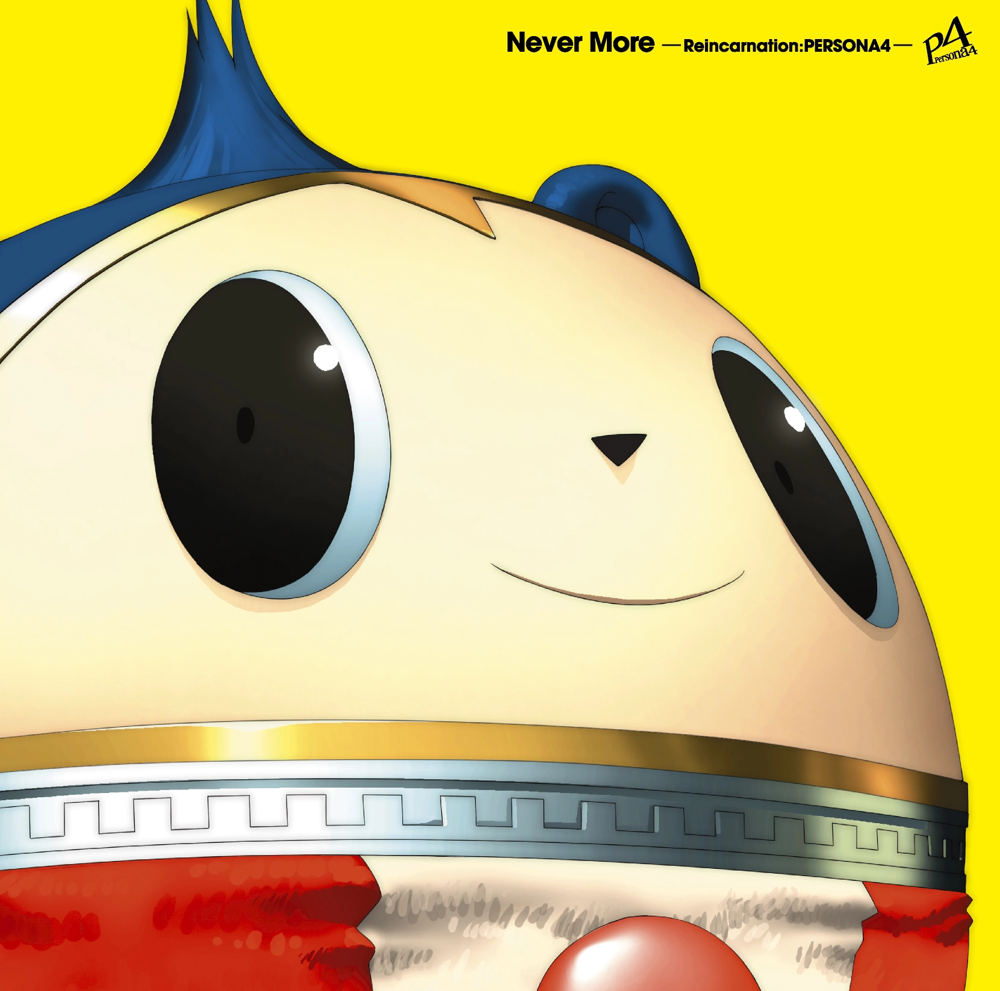
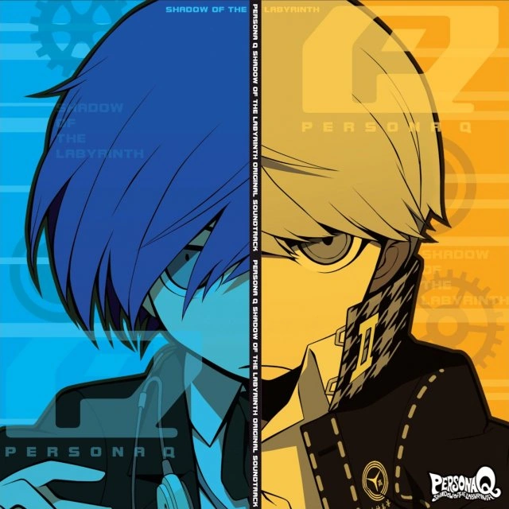
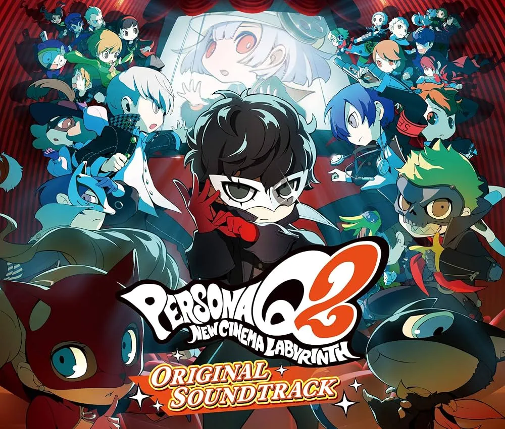
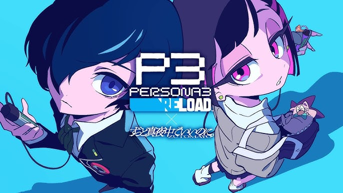

PersonaDLE
Documentation Technique v2.0
Architecture, Backend, i18n, Social, Admin & Qualité
Auteur : PersonaDLE Team | Date : Mai 2026
Technical Documentation v2.0
Architecture, Backend, i18n, Social, Admin & Quality
Author: PersonaDLE Team | Date: May 2026

◆ PersonaDLE v2.0 ◆
Documentation technique complète
Complete technical documentation
La v2.0 marque le passage de la phase refactoring vers la phase fonctionnalités utilisateur : backend PHP/MariaDB complet, internationalisation 5 langues, système social (amis, Social Link, défis), panneau d'administration, et infrastructure CI/CD.
v2.0 marks the transition from the refactoring phase to the user-features phase: complete PHP/MariaDB backend, 5-language internationalization, social system (friends, Social Link, challenges), administration panel, and CI/CD infrastructure.
✨ New Content v2.0
New characters, new music — everything added in this update.
New Characters — All-Out Attack Mode


Joker Starlight
Ren Amamiya — Persona 5 X
☀️ Summer 2026 — P5X Summer Event


Wonder Summer
Nagisa Kamishiro — Persona 5 X


Closer Summer
Motoha Arai — Persona 5 X


Moko Summer
Tomoko Noge — Persona 5 X
New Tracks — Music Mode

P3P
P3R
P4AU
P4G
P5R
P5S
P5TStack technique
| Couche | Technologie |
|---|---|
| Frontend | HTML5 / CSS3 / JavaScript ES6+ vanilla — zéro framework |
| Modules | ES6 import/export — chaque mode importe depuis js/gameCore.js |
| Persistance locale | localStorage — profil, stats, filtres, état de jeu |
| Backend | PHP 8.3, PDO (Prepared Statements obligatoires) |
| Base de données | MySQL 8.0 en local · MariaDB 10.6+ chez Hostinger |
| Hébergement | Hostinger |
| Authentification | Email + mot de passe bcrypt, sessions PHP httpOnly |
| Tests | Vitest + jsdom (npm test) |
Tech stack
| Layer | Technology |
|---|---|
| Frontend | HTML5 / CSS3 / JavaScript ES6+ vanilla — zero framework |
| Modules | ES6 import/export — each mode imports from js/gameCore.js |
| Local persistence | localStorage — profile, stats, filters, game state |
| Backend | PHP 8.3, PDO (Prepared Statements required) |
| Database | MySQL 8.0 locally · MariaDB 10.6+ on Hostinger |
| Hosting | Hostinger |
| Authentication | Email + bcrypt password, PHP httpOnly sessions |
| Tests | Vitest + jsdom (npm test) |

1. Design & CSS
1. Design & CSS
Du monolithe 2000 lignes aux fichiers par mode — responsive, dark mode, share modal, badges UI.
From the 2000-line monolith to per-mode files — responsive, dark mode, share modal, badges UI.
1.1 Séparation CSS — du monolithe aux fichiers par mode
Avant la v2.0, l'intégralité des styles du jeu était concentrée dans un unique fichier css/style.css de plus de 2 000 lignes. Ce monolithe posait des problèmes de lisibilité, de maintenabilité (modifier un mode risquait d'en casser un autre), de performance (chaque page chargeait la totalité des styles) et de collaboration (conflits de merge fréquents).
Solution — un fichier CSS par mode :
1.1 CSS Separation — from monolith to per-mode files
Before v2.0, all game styles were concentrated in a single css/style.css file of over 2,000 lines. This monolith caused readability problems, maintainability issues (modifying one mode could break another), performance issues (each page loaded all styles), and collaboration conflicts (frequent merge conflicts).
Solution — one CSS file per mode:
css/
├── global.css ← Reset, typo, confetti, navigation, modales, dark mode global
├── index.css ← Page d'accueil uniquement
└── filterMenu.css ← Panneau de filtres déroulant (partagé)
classiqueMode/classique.css
emojiMode/emoji.css
silhouetteMode/silhouette.css
musicsMode/music.css ← Lecteur audio custom P5, thèmes de couleur
personaeMode/personae.css
allOutAttackMode/allOutAttack.cssChaque page HTML ne charge que ce dont elle a besoin :
Each HTML page only loads what it needs:
<!-- Exemple : musics.html -->
<link rel="stylesheet" href="../css/global.css">
<link rel="stylesheet" href="./music.css">css/style.css existe toujours en archive mais n'est référencé par aucun fichier HTML.
css/style.css still exists as an archive but is not referenced by any HTML file.
1.2 Dark Mode
En dark mode, les thèmes de couleur de série restent actifs. Le seul changement sur le lecteur audio est un fond légèrement plus sombre pour renforcer le contraste — les CSS custom properties de couleur ne sont pas écrasées :
1.2 Dark Mode
In dark mode, the series color themes remain active. The only change on the audio player is a slightly darker background to reinforce contrast — the CSS color custom properties are not overridden:
body.darkmode .audio-wrapper {
background: linear-gradient(150deg, #0c0c0c 0%, #080808 60%, #0c0c0c 100%);
/* Pas d'override de couleurs — les variables de thème restent actives */
}Dark mode disponible via la classe .darkmode sur <body>, togglé par js/gameCore.js.
Dark mode available via the .darkmode class on <body>, toggled by js/gameCore.js.
1.3 Responsive
Le projet respecte les breakpoints standards sur toutes les pages :
1.3 Responsive
The project follows standard breakpoints on all pages:
| Breakpoint | Cible |
|---|---|
@media (max-width: 480px) | Mobile 360px+ |
@media (max-width: 768px) | Tablette |
@media (max-width: 1024px) | Petit desktop |
Utilisation de min(), clamp(), vw/vh pour les tailles fluides. Grille résultats Classic : overflow-x: auto sur mobile. Audit responsive complet effectué (360px → 1440px) :
| Fichier | Problème corrigé |
|---|---|
profile/leaderboard.css | Pills de mode wrappaient sur 2-3 lignes entre 480–640px → scroll horizontal |
profile/friends.css | Aucun breakpoint tablette (768px) → padding réduit, actions alignées |
admin/admin.css | Aucun breakpoint sous 768px → ajout 480px et 360px (grilles compactes, logo masqué) |
| Breakpoint | Target |
|---|---|
@media (max-width: 480px) | Mobile 360px+ |
@media (max-width: 768px) | Tablet |
@media (max-width: 1024px) | Small desktop |
Using min(), clamp(), vw/vh for fluid sizes. Classic results grid: overflow-x: auto on mobile. Full responsive audit completed (360px → 1440px):
| File | Issue fixed |
|---|---|
profile/leaderboard.css | Mode pills wrapped onto 2-3 lines between 480–640px → horizontal scroll |
profile/friends.css | No tablet breakpoint (768px) → reduced padding, aligned actions |
admin/admin.css | No breakpoint below 768px → added 480px and 360px (compact grids, hidden logo) |
1.4 Share Modal — Redesign Interface Profil
Fichiers : profile/profile.html, profile/profile-page.css, profile/profile-page.js
Refonte complète de l'interface de partage de profil : style Persona 5, sélecteurs CSS classes, preview correctement scalée, et capture HTML2canvas haute qualité sur clone off-screen.
Changements visuels :
- Modale élargie
max-width: 600px, ongletsColor/Wallpaperstyle P5 - Preview area : fond
#0a0a0a, hauteur 320px, carte 9:16 scalée à 45.5% - Boutons : 💾 Download PNG (rouge), 𝕏 Share on X (noir), 💬 Discord (
#5865F2), 📧 Email
1.4 Share Modal — Profile Interface Redesign
Files: profile/profile.html, profile/profile-page.css, profile/profile-page.js
Complete redesign of the profile sharing interface: Persona 5 style, CSS class selectors, correctly scaled preview, and high-quality HTML2canvas capture on an off-screen clone.
Visual changes:
- Wider modal
max-width: 600px,Color/Wallpapertabs in P5 style - Preview area:
#0a0a0abackground, 320px height, 9:16 card scaled to 45.5% - Buttons: 💾 Download PNG (red), 𝕏 Share on X (black), 💬 Discord (
#5865F2), 📧 Email
Technique — off-screen clone pour la capture :
// Clone hors-écran → qualité pleine résolution, indépendant du scale CSS
const offscreen = buildShareCard(bg, wallpaper, activeTab);
offscreen.style.position = 'fixed';
offscreen.style.left = '-9999px';
document.body.appendChild(offscreen);
const cvs = await html2canvas(offscreen, { scale: 2, useCORS: true });
document.body.removeChild(offscreen);La carte affichée dans la preview est réduite via transform: scale(0.455). La carte capturée est un clone off-screen non affecté par ce scale — le PNG exporté est toujours en pleine résolution (780×1386px à scale:2).
Les fonds GIF animés ont été retirés du sélecteur : les GIFs sont animés dans la preview mais le PNG ne capture qu'une frame statique, créant une confusion utilisateur.
The card displayed in the preview is reduced via transform: scale(0.455). The captured card is an off-screen clone unaffected by this scale — the exported PNG is always at full resolution (780×1386px at scale:2).
Animated GIF backgrounds were removed from the selector: GIFs are animated in the preview but the PNG only captures a static frame, causing user confusion.
1.5 Style sélecteur de langue — Ajout de l'Italien
Bloc CSS ajouté dans css/langSelector.css pour la langue italienne (manquait alors que EN, FR, ES, DE avaient chacun un bloc) :
1.5 Language Selector Style — Adding Italian
CSS block added in css/langSelector.css for the Italian language (was missing while EN, FR, ES, DE each had a block):
/* === ITALIANO === */
.lang-opt--it { border-left-color: #6d8b4e; }
.lang-opt--it .lang-opt-name {
font-family: 'Special Elite', 'Courier New', monospace;
font-size: 1.35rem;
}
.lang-opt--it.is-active .lang-opt-dot { color: #8fb96a; }Thème vert olive (#6d8b4e) inspiré de Persona 2, police Special Elite (typewriter vintage).
Olive green theme (#6d8b4e) inspired by Persona 2, Special Elite font (vintage typewriter).
1.6 CSS Badges — Interface catégorisée
Styles ajoutés dans profile/badges/badges.css pour la disposition par catégorie :
.badges-category-section— séparateur visuel entre catégories.badges-category-title— uppercase, couleur variant par catégorie (gold/orange/red/green)#badgesGrid—flex-direction: column; gap: 24px
1.6 CSS Badges — Categorized Interface
Styles added in profile/badges/badges.css for the category layout:
.badges-category-section— visual separator between categories.badges-category-title— uppercase, color varying by category (gold/orange/red/green)#badgesGrid—flex-direction: column; gap: 24px
[ ACHIEVEMENTS (3/8) ] [ badge ] [ badge ] [ badge ] …
[ EVENTS (1/2) ] [ badge ] [ badge ]
[ SECRETS (0/5) ] [ badge ] [ badge ] …
[ SOCIAL (0/3) ] [ badge ] [ badge ] …
2. Système de traduction i18n
2. i18n Translation System
5 langues, 760 clés, détection automatique, boutons localisés par langue.
5 languages, 760 keys, automatic detection, language-localized buttons.
2.1 Architecture du système i18n
Avant la v2.0, tous les textes du jeu étaient hardcodés en anglais dans les fichiers HTML et JS.
2.1 i18n system architecture
Before v2.0, all game texts were hardcoded in English in the HTML and JS files.
lang/
├── en.json ← Source de vérité — 760 clés
├── fr.json ← Traduction complète synchronisée (760 clés)
├── es.json ← Traduction complète synchronisée (760 clés)
├── de.json ← Traduction complète synchronisée (760 clés)
└── it.json ← Traduction complète synchronisée (760 clés)
js/
└── i18n.js ← setLang(), t(), initLang(), applyToDOM(), updateLangButtons()| Fonction | Rôle |
|---|---|
initLang() | Détecte la langue (localStorage → navigateur → EN), charge le JSON, applique au DOM |
setLang(lang) | Change la langue à la volée et sauvegarde en localStorage |
t(key, vars) | Résout une clé hiérarchique avec variables {{var}} — fallback clé brute |
applyToDOM() | Applique data-i18n, data-i18n-placeholder, data-i18n-title, data-i18n-block |
updateLangButtons(lang) | Swap les images de boutons localisés selon la langue active |
window.i18n | Objet global exposé pour les modules JS qui n'importent pas directement |
Attributs HTML supportés :
Supported HTML attributes:
<span data-i18n="ui.submit">Submit</span>
<input data-i18n-placeholder="ui.input_placeholder">
<div data-i18n-title="modes.classic.tooltip_name">
<div data-i18n-block="fr">Contenu français uniquement</div>Piège critique — t(key) ?? fallback ne fonctionne pas :
window.i18n.t(key) retourne la clé brute (string truthy) quand elle n'existe pas — ?? ne se déclenche jamais. Pattern correct :
Critical pitfall — t(key) ?? fallback does not work:
window.i18n.t(key) returns the raw key (truthy string) when missing — ?? never triggers. Correct pattern:
const r = window.i18n?.t?.(key);
return (r != null && r !== key) ? r : fallback;2.2 Corrections critiques i18n
Fix 404 — résolution de chemin depuis les sous-dossiers
Problème : depuis les sous-dossiers (classiqueMode/, musicsMode/…), le chargement des fichiers lang/ produisait des erreurs HTTP 404. L'ancien code construisait le chemin à partir de window.location.href, donnant classiqueMode/lang/fr.json.
Solution : ancrage sur import.meta.url — indépendant de la page hôte :
2.2 Critical i18n fixes
Fix 404 — path resolution from subdirectories
Problem: from subdirectories (classiqueMode/, musicsMode/…), loading lang/ files produced HTTP 404 errors. The old code built the path from window.location.href, giving classiqueMode/lang/fr.json.
Solution: anchoring on import.meta.url — independent of the host page:
// js/i18n.js
var _langBase = new URL('../lang/', import.meta.url).href;Fix persistance de la langue
Problème : le choix de langue revenait à EN à chaque rechargement. Quand le fetch échouait (fallback EN), la variable lang était écrasée avant le localStorage.setItem.
Solution : sauvegarder la langue demandée avant tout fallback :
Fix language persistence
Problem: the language choice reverted to EN on each reload. When the fetch failed (EN fallback), the lang variable was overwritten before the localStorage.setItem.
Solution: save the requested language before any fallback:
var requested = lang;
try {
translations = await fetchLang(lang);
} catch (e) {
lang = 'en';
translations = await fetchLang('en');
}
localStorage.setItem(STORAGE_KEY, requested); // toujours la langue voulueFix race condition au chargement
Problème : certains textes dynamiques affichaient la clé brute après rechargement. Le callback DOMContentLoaded restaurait l'état avant que initLang() (asynchrone) ait terminé.
Solution : pattern window.__i18nReady :
Fix load race condition
Problem: some dynamic texts displayed the raw key after reload. The DOMContentLoaded callback restored state before initLang() (async) had finished.
Solution: window.__i18nReady pattern:
<script type="module">
import { initLang } from '../js/i18n.js';
window.__i18nReady = initLang();
</script>
// Dans chaque modeX.js
document.addEventListener('DOMContentLoaded', async () => {
if (window.__i18nReady) await window.__i18nReady; // première ligne
// ...
});2.3 Sélecteur de langue
Bouton 🌐 EN ▼ avec dropdown animé sur toutes les pages. Détection automatique de la langue navigateur au premier chargement.
| Langue | Personnage illustré |
|---|---|
| English | Lisa Silverman (P2) |
| Français | Bébé (P3) |
| Español | Morgana (P5) |
| Deutsch | Hulkenberg (P3R) |
| Italiano | Caesar (P2) |
2.3 Language selector
🌐 EN ▼ button with animated dropdown on all pages. Automatic browser language detection on first load.
| Language | Illustrated character |
|---|---|
| English | Lisa Silverman (P2) |
| Français | Bébé (P3) |
| Español | Morgana (P5) |
| Deutsch | Hulkenberg (P3R) |
| Italiano | Caesar (P2) |
2.4 Boutons localisés — Images WebP par langue
Les boutons du jeu (Hint, Give-Up, Replay, Submit) affichent désormais leur texte dans la langue active.
2.4 Localized buttons — WebP images per language
Game buttons (Hint, Give-Up, Replay, Submit) now display their text in the active language.
assets/buttons/
├── EN/ Hint_Button(.webp | _Rouge | _Transparent)
│ Give-up_Button(.webp | _Rouge | _Transparent)
│ Replay_Button(.webp | _Rouge | _Transparent)
│ Submit_Button(.webp | _Rouge)
├── FR/ Indice, Abandonner, Rejouer, Valider (+ _Rouge + _Transparent)
├── ES/ Pista, Abandonar, Volver_a_jugar, Confirmar
├── DE/ Tipp, Aufgeben, Erneut_spielen, Senden
├── IT/ Suggerimento, Abbandona, Rigioca, ConfermaLes anciens fichiers racine ont été **supprimés** — tous les modes utilisent désormais EN/Hint_Button.webp ou la variante de la langue active.
Fonction updateLangButtons(lang) ajoutée dans js/i18n.js, appelée à la fin de setLang() :
function updateLangButtons(lang) {
var cfg = _BUTTON_CFG[lang] || _BUTTON_CFG['en'];
// Pour #hintButton, #giveUpButton, #resetButton, #guessButton :
// img.normal.src = _btnBase + cfg.XX.n
// img.active.src = _btnBase + cfg.XX.a (variante rouge = survol)
}_btnBase est résolu via import.meta.url — indépendant de la page hôte.
_btnBase is resolved via import.meta.url — independent of the host page.
2.5 Traduction des valeurs d'attributs — Mode Classique
Les valeurs de la grille de comparaison (genre, arcane) sont traduites dynamiquement :
2.5 Attribute value translation — Classic Mode
Comparison grid values (gender, arcana) are translated dynamically:
"data": {
"genre": { "Male": "Masculin", "Female": "Féminin", "Human": "Humain", "Shadow": "Ombre" },
"arcane": { "Death": "Mort", "Hermit": "Ermite", "Moon": "Lune", "Fool": "Fou" }
}const translateAtom = (ns, v) => {
const translated = i18.t(`data.${ns}.${v}`);
return (translated === `data.${ns}.${v}`) ? v : translated;
};2.6 Badges traduits (5 langues)
Tous les badges de profile/badges/badgesData.js ont été traduits dans les 5 fichiers lang/ : name, description, condition (condition verrouillée → "???" pour les badges secrets).
2.6 Translated badges (5 languages)
All badges in profile/badges/badgesData.js have been translated in all 5 lang/ files: name, description, condition (locked condition → "???" for secret badges).
| Clé | EN | FR | ES | DE | IT |
|---|---|---|---|---|---|
badges.category_achievement | Achievements | Réussites | Logros | Erfolge | Risultati |
badges.category_event | Events | Événements | Eventos | Events | Eventi |
badges.category_secret | Secrets | Secrets | Secretos | Geheimnisse | Segreti |
badges.category_social | Social | Social | Social | Soziales | Sociale |
function getBadgeName(badge) // t(`badges.${badge.id}.name`) || badge.name
function getBadgeDescription(badge) // t(`badges.${badge.id}.description`) || badge.description
function getBadgeCondition(badge, unlocked) // "???" si secret+verrouillé, sinon t() || badge.condition
3. Architecture JavaScript
3. JavaScript Architecture
Centralisation dans gameCore.js, client REST api.js, auth.js, offline-first, fire-and-forget.
Centralization in gameCore.js, REST client api.js, auth.js, offline-first, fire-and-forget.
3.1 Séparation des modules JS
Avant la v2.0, chaque mode embarquait ses propres copies des fonctions utilitaires. Toutes les fonctions partagées ont été centralisées dans js/gameCore.js :
3.1 JS module separation
Before v2.0, each mode contained its own copies of utility functions. All shared functions have been centralized in js/gameCore.js:
| Catégorie | Fonctions |
|---|---|
| Date & reset | getParisDateString(), setupDailyReset(), checkResetOnLoad() |
| UI partagée | showConfettiExplosion(), setupRulesModal(), revealNextLink() |
| Normalisation | normalize() (accents, casse, caractères spéciaux) |
| Dark mode | applyDarkMode(), toggleDarkMode() |
| Navigation | buildModeNavigation() |
| Sessions | buildGameSession(), savePendingSession() |
js/
├── gameCore.js ← Fonctions communes (date, confetti, filtres, sessions…)
├── filterMenu.js ← Panneau de filtres collapsible (partagé)
├── i18n.js ← Moteur de traduction
├── api.js ← Client REST (api.auth.*, api.stats.*, api.user.*)
├── auth.js ← UI connexion/inscription, initAuth(), migration
├── cloud-sync.js ← Source de vérité cloud : pullProfileFromCloud()
├── streak-recovery.js ← Menu Jack Frost streak recovery
├── social-link.js ← XP Social Link, jauges, rangs, toast rang-up
├── notifications.js ← Polling notifications hors-jeu
├── challenge-banner.js ← Bandeau défi actif en jeu
├── challenge-result.js ← Animation résultat défi
└── tv-friend-anim.js ← Animation TV Persona 4 demandes d'amis3.2 Client REST — js/api.js
Module centralisant tous les appels HTTP vers le backend PHP. Exposé globalement via window._personadleApi pour éviter les imports circulaires avec gameCore.js.
URL dynamique :
const BASE_URL = window.location.hostname === 'personadle.net'
? 'https://personadle.net/api'
: `${window.location.protocol}//${window.location.host}/personadle/api`;Structure de l'objet api :
export const api = {
auth: {
register({ email, pseudo, password, lang }), // POST /api/auth/register
login({ email, password }), // POST /api/auth/login
logout(), // POST /api/auth/logout
me(), // GET /api/auth/me
},
stats: {
postSession(session), // POST /api/sessions
syncPending(), // Dépile pendingSessions du localStorage vers l'API
},
user: {
get(id), // GET /api/user/:id
patch(id, data), // PATCH /api/user/:id
delete(id), // DELETE /api/user/:id
stats(id), // GET /api/user/:id/stats
migrate(payload), // POST /api/user/migrate
},
badges: { catalog(lang) }, // GET /api/badges
wallpapers: { catalog() }, // GET /api/wallpapers
leaderboard: { get(params) }, // GET /api/leaderboard
friends: { list(), add(), respond(), remove() },
messages: { list(), send(), update(), remove() },
socialLink: { get(friendId), interact(linkId, action), getByFriend(friendId) },
};
window._personadleApi = api; // bridge globalToutes les requêtes utilisent credentials: 'include' pour transmettre le cookie PHPSESSID.
All requests use credentials: 'include' to transmit the PHPSESSID cookie.
3.3 Auth Frontend — js/auth.js
État global : window._currentUser = null (null = anonyme, objet = connecté).
Convention HTML data-auth :
3.3 Auth Frontend — js/auth.js
Global state: window._currentUser = null (null = anonymous, object = logged in).
HTML data-auth convention:
<div data-auth="connected">Mon profil</div>
<button data-auth="anonymous" data-open-modal="loginModal">Se connecter</button>
<span data-auth-field="pseudo"></span>Séquence initAuth() :
GET /api/auth/me→ restaure la session si cookie valideupdateAuthUI(user)→ affiche/masque les zones- Si connecté :
syncPending()→ envoie les sessions offline accumulées - Setup des formulaires login/register/logout
Migration localStorage → cloud : migrateLocalStorageToCloud() appelée automatiquement après inscription.
Auth sans rechargement : dispatch d'événements personadle:auth-login et personadle:auth-logout.
initAuth() sequence:
GET /api/auth/me→ restores session if cookie is validupdateAuthUI(user)→ shows/hides zones- If logged in:
syncPending()→ sends accumulated offline sessions - Setup of login/register/logout forms
localStorage → cloud migration: migrateLocalStorageToCloud() called automatically after registration.
Auth without reload: dispatch of personadle:auth-login and personadle:auth-logout events.
3.4 buildGameSession + savePendingSession (gameCore.js)
export function buildGameSession({ mode, targetName, result, attempts, timeMs = 0, filters = [] }) {
return {
mode, target_name: targetName, result, attempts,
time_ms: Math.round(timeMs),
active_filters: filters,
played_date: getParisDateString(),
};
}
export async function savePendingSession(session) {
const api = window._personadleApi;
if (api) {
try {
await api.stats.postSession(session);
await api.stats.syncPending();
return;
} catch { /* réseau indisponible → fallback */ }
}
const pending = JSON.parse(localStorage.getItem('pendingSessions') || '[]');
pending.push(session);
localStorage.setItem('pendingSessions', JSON.stringify(pending));
}3.5 Cloud Sync — js/cloud-sync.js
pullProfileFromCloud() fait un seul GET /api/user/:id et écrase tout le localStorage pour maintenir la synchro.
3.5 Cloud Sync — js/cloud-sync.js
pullProfileFromCloud() makes a single GET /api/user/:id and overwrites all localStorage to maintain sync.
3.6 Fix détection IS_LOCAL et autres corrections JS
3.6 IS_LOCAL detection fix and other JS corrections
const IS_LOCAL = (() => {
const h = location.hostname;
return (h === "" || h === "localhost" || h === "127.0.0.1" || h === "0.0.0.0"
|| /^192\.168\./.test(h) || /^10\./.test(h));
})();
4. Système de filtres
4. Filter System
Sous-filtres par opus, _migrate(), ALL_OPUS, guard pool vide — robustesse complète.
Sub-filters by opus, _migrate(), ALL_OPUS, empty pool guard — full robustness.
4.1 Panneau de filtres partagé — js/filterMenu.js
4.1 Shared filter panel — js/filterMenu.js
import { initFilterMenu } from "../js/filterMenu.js";
const _filterApi = initFilterMenu("musicActiveFilters", ALL_OPUS, (newActive) => {
if (newActive.length === 0) return; // guard pool vide
activeFilters = newActive;
resetGame(true); // true = sélection aléatoire dans le pool filtré
});4.2 _migrate() — Correction de l'expansion incorrecte
Correction pour éviter que "P5" remplace les filtres détaillés lors des défis.
4.3 Guard pool vide + bandeau d'avertissement
Injection dynamique d'un <div class="filter-empty-warning"> affiché dès que activeOpus.length === 0.
4.4 Préservation des filtres dans les défis
Les filtres sont passés dans les requêtes de défi (colonne challenge_filters) et restaurés après partie.
4.2 _migrate() — Fix for incorrect expansion
Fix to prevent "P5" from replacing detailed filters during challenges.
4.3 Empty pool guard + warning banner
Dynamic injection of a <div class="filter-empty-warning"> displayed as soon as activeOpus.length === 0.
4.4 Filter preservation in challenges
Filters are passed in challenge requests (column challenge_filters) and restored after the game.

5. Mode Musique
5. Music Mode
130+ pistes, lecteur custom P5, thème dynamique par série, filtres P4AU et P5T.
130+ tracks, custom P5 player, dynamic theme per series, P4AU and P5T filters.
5.1 Lecteur Audio Custom
L'élément <audio controls> natif a été remplacé par un composant HTML/CSS/JS custom inspiré de Persona 5 :
5.1 Custom Audio Player
The native <audio controls> element was replaced by a custom HTML/CSS/JS component inspired by Persona 5:
<div class="audio-wrapper" id="audioBox">
<audio id="audioPlayer" preload="none"><source src="" type="audio/mp3"></audio>
<div class="p5-player">
<div class="p5-player-header">
<span class="p5-player-label" data-i18n="ui.now_playing">♪ NOW PLAYING</span>
<div class="p5-sound-bars" id="p5SoundBars">
<span></span><span></span><span></span><span></span><span></span>
</div>
</div>
<div class="p5-player-controls">
<button class="p5-play-btn" id="p5PlayBtn" aria-label="Play / Pause">
<span id="p5PlayIcon">▶</span>
</button>
<div class="p5-timeline">
<div class="p5-progress" id="p5Progress">
<div class="p5-progress-fill" id="p5ProgressFill"></div>
</div>
<div class="p5-time-row">
<span id="p5CurrentTime">0:00</span>
<span id="p5Duration">--:--</span>
</div>
</div>
</div>
</div>
</div>Animations CSS (barres de son) :
.p5-sound-bars.playing span:nth-child(1) { animation: p5bar 0.75s ease-in-out infinite; }
.p5-sound-bars.playing span:nth-child(2) { animation: p5bar 0.55s ease-in-out 0.12s infinite; }
.p5-sound-bars.playing span:nth-child(3) { animation: p5bar 0.90s ease-in-out 0.06s infinite; }
.p5-sound-bars.playing span:nth-child(4) { animation: p5bar 0.65s ease-in-out 0.20s infinite; }
.p5-sound-bars.playing span:nth-child(5) { animation: p5bar 1.00s ease-in-out 0.04s infinite; }
@keyframes p5bar {
0%, 100% { height: 4px; opacity: 0.6; }
50% { height: 20px; opacity: 1; }
}5.2 Thème de couleur dynamique par série
Le lecteur adapte ses couleurs via CSS custom properties — JS les écrase via setPlayerTheme() :
| Série | Couleur principale |
|---|---|
| P1 | #7c3aed — violet |
| P2IS | #ea580c — orange |
| P2EP | #8b5cf6 — lavande |
| P3 / P3FES / P3R | #3b82f6 — bleu |
| P3P | #818cf8 — bordure + dégradé bleu→rose |
| P4 / P4G / P4D / P4AU | #eab308 — or |
| P5 / P5R / P5S / P5T | #e63946 — rouge |
| P5X | #c0193a — bordeaux/cramoisi |
| PQ / PQ2 | #f97316 — orange |
Cas P3P — dégradé bicolore :
5.2 Dynamic color theme per series
The player adapts its colors via CSS custom properties — JS overrides them via setPlayerTheme():
| Series | Primary color |
|---|---|
| P1 | #7c3aed — purple |
| P2IS | #ea580c — orange |
| P2EP | #8b5cf6 — lavender |
| P3 / P3FES / P3R | #3b82f6 — blue |
| P3P | #818cf8 — border + blue→pink gradient |
| P4 / P4G / P4D / P4AU | #eab308 — gold |
| P5 / P5R / P5S / P5T | #e63946 — red |
| P5X | #c0193a — burgundy/crimson |
| PQ / PQ2 | #f97316 — orange |
P3P case — two-color gradient:
P3P: {
accent: '#818cf8',
dark: '#3b82f6',
light: '#f9a8d4',
glow: 'rgba(129,140,248,{a})',
gradientFill: 'linear-gradient(90deg, #1d4ed8, #3b82f6 30%, #c084fc 65%, #ec4899)',
},5.3 Nouveaux opus dans les filtres — P4AU et P5T
- P4AU (Persona 4 Arena Ultimax) : sous-bouton dans le groupe P4, logo
Persona_4_Arena_Ultimax_Logo.png, thème jaune P4 - P5T (Persona 5 Tactica) : sous-bouton dans le groupe P5, logo
Persona_5_Tactica_Logo.png, thème rouge P5 data-opus-codesdes groupes P4 et P5 mis à jour dansmusicsMode/musics.htmlALL_OPUSetOPUS_THEMESdansmodeMusic.jscomplétés
Bug corrigé : ALL_OPUS ne contenait pas P4AU ni P5T → filterMenu.js ignorait silencieusement ces boutons. Fix : ajout à ALL_OPUS + OPUS_THEMES.
Bug corrigé : changement de filtre ne changeait pas la chanson — resetGame() sans argument → random = false. Fix : resetGame(true) dans le callback.
5.3 New opus in filters — P4AU and P5T
- P4AU (Persona 4 Arena Ultimax): sub-button in P4 group, logo
Persona_4_Arena_Ultimax_Logo.png, P4 yellow theme - P5T (Persona 5 Tactica): sub-button in P5 group, logo
Persona_5_Tactica_Logo.png, P5 red theme data-opus-codesfor P4 and P5 groups updated inmusicsMode/musics.htmlALL_OPUSandOPUS_THEMESinmodeMusic.jscompleted
Bug fixed: ALL_OPUS did not contain P4AU or P5T → filterMenu.js silently ignored these buttons. Fix: added to ALL_OPUS + OPUS_THEMES.
Bug fixed: filter change did not change the song — resetGame() without argument → random = false. Fix: resetGame(true) in callback.
5.4 Couvertures d'opus disponibles
5.4 Available opus covers

P1
P2IS
P2EP
P3
P3FESP3PP3R
P4P4GP4AU
P4DP5P5RP5SP5TP5X
PQ
PQ2Velvet
Zutomayo
6. Backend & Base de données
6. Backend & Database
MariaDB 10.6+, 20 tables, API REST complète, offline-first, RGPD.
MariaDB 10.6+, 20 tables, complete REST API, offline-first, GDPR.
6.1 Choix MySQL 8.0 / MariaDB 10.6+
Le schéma BDD a été adapté pour MySQL 8.0 en développement local et MariaDB 10.6+ chez Hostinger.
| PostgreSQL | MySQL / MariaDB équivalent |
|---|---|
BIGSERIAL | BIGINT UNSIGNED NOT NULL AUTO_INCREMENT |
BOOLEAN | TINYINT(1) |
TEXT illimité | TEXT / MEDIUMTEXT (avatar base64 > 64 KB) |
NOW() | CURRENT_TIMESTAMP |
ON UPDATE NOW() | ON UPDATE CURRENT_TIMESTAMP |
Piège : rank est un mot réservé MySQL 8.0 — toujours entourer de backticks : `rank` dans CREATE TABLE, INSERT, CHECK, VIEW.
Piège PDO : MySQL PDO ne supporte pas :param répété plusieurs fois dans un même prepare(). Utiliser des ? positionnels et execute([$val, $val, $val]).
6.2 Schéma BDD — 20 tables
Fichier : sql/bdd_mysql.sql
6.1 MySQL 8.0 / MariaDB 10.6+ choice
The DB schema was adapted for MySQL 8.0 in local development and MariaDB 10.6+ on Hostinger.
| PostgreSQL | MySQL / MariaDB equivalent |
|---|---|
BIGSERIAL | BIGINT UNSIGNED NOT NULL AUTO_INCREMENT |
BOOLEAN | TINYINT(1) |
TEXT unlimited | TEXT / MEDIUMTEXT (base64 avatar > 64 KB) |
NOW() | CURRENT_TIMESTAMP |
ON UPDATE NOW() | ON UPDATE CURRENT_TIMESTAMP |
Pitfall: rank is a reserved word in MySQL 8.0 — always wrap in backticks: `rank` in CREATE TABLE, INSERT, CHECK, VIEW.
PDO pitfall: MySQL PDO does not support :param used multiple times in the same prepare(). Use positional ? and execute([$val, $val, $val]).
6.2 DB Schema — 20 tables
File: sql/bdd_mysql.sql
Voir les 20 tables
View the 20 tables
| Table | Description |
|---|---|
users | Compte utilisateur (email, pseudo, hash, friend_code, is_banned, pseudo_locked) |
profiles | Avatar, fond d'écran, badges équipés, titre équipé, musique de profil |
user_stats | Stats par mode (wins, giveups, streak, perfect_wins, total_time_ms) |
game_sessions | Historique de chaque partie jouée (anti-duplon par user+mode+date) |
badges | Catalogue des 60 badges (slug, condition, rarity, image_path) |
badges_unlocked | Badges débloqués par utilisateur |
wallpapers | Catalogue des wallpapers (7 entrées, conditions de déblocage) |
user_wallpapers | Wallpapers débloqués par utilisateur |
event_codes | Codes événement (code, badge_id, dates, is_active) |
event_codes_redeemed | Codes utilisés par utilisateur |
titles | Catalogue des titres traduits EN/FR/ES/DE/IT (11 titres) |
user_titles | Titres débloqués par utilisateur |
friendships | Demandes d'amis (pending / accepted / blocked) |
social_link_ranks | Noms des rangs traduits (Stranger → True Confidant) |
social_links | Relation Social Link entre deux amis (rang 1-10, XP) |
social_link_interactions | Log des actions générant de l'XP |
social_link_rankup_notifs | Notifications de passage de rang pour les deux joueurs |
messages | Messages et défis entre amis (avec challenge_filters) |
leaderboard_cache | Cache des classements (recalculé par cron) |
deletion_requests | RGPD — log des suppressions de compte (hard delete J+30) |
Tables créées par migrations :
Tables created by migrations:
001_add_challenge_filters.sql ← colonne challenge_filters sur messages
002_add_has_migrated.sql ← colonne has_migrated sur users
006_fix_title_slugs.sql ← 11 UPDATE alignent slugs BDD sur format JS
007_badges_wallpapers_catalog.sql ← table badges (60 entrées) + wallpapers peuplés
010_true_confidant.sql ← social_link_rankup_notifs + is_badge_prompt
011_event_codes_moderation.sql ← table event_codes + seed 12 codes + is_banned/pseudo_locked
012_remove_tcb.sql ← suppression True Confidant Badge canvasRoutines stockées : get_or_create_social_link (garantit user_a_id < user_b_id), gain_social_link_xp / add_social_link_xp — ajoute XP, retourne nouveau rang via params OUT, détecte passage de rang.
Stored routines: get_or_create_social_link (ensures user_a_id < user_b_id), gain_social_link_xp / add_social_link_xp — adds XP, returns new rank via OUT params, detects rank change.
6.3 API REST PHP
6.3 REST PHP API
Liste complète des endpoints
Full endpoint list
Auth :
POST /api/auth/register— crée users + profiles + user_stats × 6 modes dans une transactionPOST /api/auth/login— protection anti-énumération : hash dummy si email inexistantGET /api/auth/me— retourne{user: null}si pas de session (pas une erreur)POST /api/auth/logout— nettoie session, supprime cookie, retourne toujours 200
Sessions & Stats :
POST /api/sessions— anti-duplon (user+mode+date), calcul streak atomiqueGET /api/user/:id/stats— agrégats par mode + globaux
Utilisateur :
GET /api/user/:id— profil public restreint pour tout utilisateur authentifiéPATCH /api/user/:id— whitelist explicite des champs modifiables, ownership checksDELETE /api/user/:id— soft delete RGPD + anonymisation + log deletion_requestsPOST /api/user/migrate— migration idempotente localStorage → BDD (INSERT IGNORE)POST /api/user/compare— comparaison stats + XP Social Link +ranked_up/new_rankPOST /api/user/recover-streak— restaure la streak (cooldown 2 mois)
Social :
GET|POST|PATCH|DELETE /api/friends— gestion amisGET|POST /api/messages— CRUD messages et défisGET|POST /api/social-links/by-friend/:id— crée ou récupère lienPOST /api/social-links/:id/interact— XP avec détection mutualité (×2)
Contenu :
GET /api/badges/POST /api/badges/unlock— catalogue + vérification condition côté serveurGET /api/wallpapers/POST /api/wallpapers/unlockGET /api/titles/POST /api/titles/unlockGET /api/leaderboard— classements avec filtres mode/période/métrique/scope
Admin :
GET|PATCH /api/admin/user/:id— profil complet avec champs sensiblesGET|POST|PATCH|DELETE /api/admin/event_codes— CRUD codes événementGET /api/cron/leaderboard.php?key=SECRET— recalcul cache classementsGET /api/cron/hard-delete.php?key=SECRET— hard delete RGPD J+30
6.4 Architecture Offline-First
Partie terminée
↓
savePendingSession(session)
├── window._personadleApi disponible ?
│ ├── OUI → POST /api/sessions
│ │ ├── Succès → syncPending() (vide queue localStorage)
│ │ └── Erreur réseau → localStorage (fallback)
└── NON (non connecté) → localStorage
↓
Reconnexion / initAuth()
↓
syncPending() → dépile la queue vers l'APILes erreurs 409 (session déjà enregistrée côté serveur) sont traitées par continue silencieux — évite de bloquer les sessions suivantes dans la queue.
6.5 Décisions d'architecture backend
- Sessions PHP et pas JWT : révocation instantanée (logout, suppression de compte). JWT stateless ne peut pas être invalidé avant expiration.
window._personadleApi: bridge global pour casser l'import circulairegameCore.js↔api.js— même pattern quewindow.i18n.- CORS whitelist :
credentials: 'include'est incompatible avecAccess-Control-Allow-Origin: *. - Deux blocs
<Directory>Apache : Apache résout les symlinks →AllowOverride Alldoit être sur le chemin réel et le chemin symlinké.
6.6 Soft Delete RGPD
-- Anonymisation immédiate (DELETE déclenché par l'utilisateur)
UPDATE users SET
is_deleted = 1,
deleted_at = NOW(),
email = CONCAT("deleted_", id, "@personadle.net"),
pseudo = CONCAT("DeletedUser_", id),
password_hash = "deleted"
WHERE id = ?;
INSERT INTO deletion_requests (user_id) VALUES (?);Hard delete différé J+30 via cron (api/cron/hard-delete.php) : DELETE FROM users WHERE id = ? + CASCADE InnoDB sur toutes les tables liées.

7. Système Social
7. Social System
Amis, Social Link (rangs 1-10, True Confidant), défis quotidiens, notifications, animations TV P4 / Calling Card / Evoker P3.
Friends, Social Link (ranks 1-10, True Confidant), daily challenges, notifications, P4 TV / Calling Card / P3 Evoker animations.
7.1 Page Friends (profile/friends/friends.html)
- Recherche : par pseudo (LIKE, 20 résultats max) ou friend_code exact (8 chars)
- Demandes reçues : badge de comptage, boutons Accepter / Refuser
- Liste d'amis : mini-avatar, pseudo, code ami, boutons "View Profile" et "Remove"
- Flamme 🔥 si
last_seen_at= aujourd'hui (même jour) - État invité : message d'invitation à se connecter si non authentifié
7.2 Social Link — XP, rangs 1-10
Mécanisme inspiré des jeux Persona : une relation entre deux amis progresse en rang (1 → 10) via des interactions mutuelles. Le rang est symétrique et partagé. Les actions mutuelles donnent 2× l'XP. Anti-spam : une action par type par jour par lien.
| Action | XP solo | XP mutuel |
|---|---|---|
visit_profile | 5 | 10 |
share_score | 10 | 20 |
compare_stats | 10 | 20 |
share_streak | 15 | 30 |
challenge | 15 | 35 |
play_same_day | 20 | 20 |
| Rang | Nom | XP cumulés |
|---|---|---|
| 1 | Stranger | 0 |
| 2 | Acquaintance | 100 |
| 3 | Companion | 250 |
| 4 | Ally | 450 |
| 5 | Confidant | 700 |
| 6 | Trusted Ally | 1 000 |
| 7 | True Ally | 1 350 |
| 8 | Bond | 1 750 |
| 9 | Unbreakable Bond | 2 200 |
| 10 | True Confidant | 2 700 |
Animation rang-up Persona-style (showSocialLinkRankUp) : overlay plein écran, slash diagonal rouge + 8 particules sparkle, numéro de rang + nom en or, auto-dismiss 3.5s. Bridge global window._showSocialLinkRankUp.
XP déclenché comme effet de bord des vraies actions : visit_profile au load du profil public, compare_stats côté serveur dans /api/user/compare. Jamais sur clic d'un bouton de jauge.
7.3 Effet True Confidant — Rang 10
Fichiers : css/rank10-effect.css + js/social-link.js (export applyRank10Effect)
| Timing | Effet |
|---|---|
| Immédiat | Halo doré pulsant autour de l'avatar (rank10Pulse 2s infinite) |
| Immédiat | Icône ✦ dorée ajoutée à droite du pseudo (.rank10-icon) |
delayMs + 0s | 8 particules burst radiales depuis l'avatar |
delayMs + 600ms | Label typewriter "✦ True Confidant" apparaît |
delayMs + 2400ms | Label fade-out et suppression du DOM |
applyRank10Effect(avatarEl, pseudoEl, delayMs = 0)
// Appelé dans profile-view.js (profil public) et friends.js (stagger 150ms/entrée)7.4 Défis quotidiens
Envoi : bouton "Défier un ami" post-victoire dans les 6 modes (showChallengeButton). Erreur 409 si défi déjà envoyé aujourd'hui (1 défi par paire d'amis par jour).
Acceptation : efface l'état de jeu du mode (via MODE_STATE_KEYS), applique les filtres du challenger, pose activeChallenge en localStorage, redirige vers le mode.
const MODE_STATE_KEYS = {
classic: ['target', 'attempts', 'guessHistory'],
emoji: ['targetEmoji', 'attemptsEmoji', 'emojiGameOver', 'emojiWin'],
silhouette: ['silhouetteTarget', 'silhouetteAttempts', 'silhouetteGameOver'],
alloutattack: ['aoaTarget', 'aoaAttempts', 'aoaGameOver'],
personae: ['personaeTarget', 'personaeAttempts', 'personaeGameOver'],
music: ['musicTarget', 'musicAttempts', 'musicGameOver', 'musicTriedTitles'],
};Résolution : checkChallengeCompletion() hors du bloc victoire dans les 6 modes — give-up résout le défi avec isWin=false → statut 'expired' → animation "dommage".
7.5 Bandeau de défi en jeu
initChallengeBanner(currentMode) injecte un pill flottant fixe en bas à droite (position: fixed; bottom: 80px; right: 16px), fond sombre semi-transparent, bordure rouge, backdrop-filter blur, animation slide-in. Affiche pseudo + avatar du challenger et score à battre.
7.6 Notifications hors-jeu
js/notifications.js — polling toutes les POLL_INTERVAL_MS = 60 000 ms :
_checkChallengeResults(): défisbeaten/expirednon vus →showSenderChallengeResult(msg)_checkRankUpNotifs(): passages de rang →showSocialLinkRankUp- Guard
_crInitDone_${me.id}namespaced par user_id — évite le flood d'animations historiques et persiste entre changements de compte
7.7 Animations — Calling Card, TV P4, Evoker P3
Sélecteur dans les réglages : 🃏 Calling Card | 📺 P4 TV | 🔫 P3 Evoker. Sauvegardé dans personaSettings.anim_friend_request_style.
Animation TV Persona 4 (js/tv-friend-anim.js + css/tv-friend-anim.css) — TV entièrement en CSS pur, aucune image WebP :
| Étape | Timing | Détail |
|---|---|---|
| TV pop-in | 0s | cubic-bezier(0.34, 1.56, 0.64, 1) — antennes, corps beige, bezel, pieds |
| CRT noise | 0–2.5s | Canvas 64×48px, RAF, noir/blanc aléatoire |
| Avatar reveal | 0.5–3s | grayscale → couleur, fond flouté 124% |
| Flash + burst | 2.5s | Écran flash blanc, burst avatar hors TV |
| Idle glow pulse | 3.2s+ | .tv--waiting — infinite glow |
| 28 particules | 2.5s | --dx/--dy/--rot CSS vars, 8 couleurs, 6 formes |
| Boutons | 2.88s | Accept / Not now — overlay reste jusqu'au choix |
Architecture clé : .tv-burst-wrap est enfant direct de .tv-wrap (NON de .tv-body) — évite le clipping par isolation: isolate.
7.8 Streak Recovery — Menu Jack Frost
js/streak-recovery.js + css/streak-recovery.css + api/user/recover-streak.php — apparaît au login si streak cassée (cooldown 2 mois). POST /api/user/recover-streak { previous_streak } → UPDATE user_stats SET streak=? pour tous les modes.

8. Leaderboard
8. Leaderboard
Filtres mode/période/métrique, scope Global/Friends, my_rank, recalcul par cron.
Mode/period/metric filters, Global/Friends scope, my_rank, recalculation by cron.
8.1 Page Leaderboard (profile/leaderboard/leaderboard.html)
| Filtre | Options |
|---|---|
| Scope | Global / Friends |
| Mode | all, classic, emoji, silhouette, alloutattack, personae, music |
| Période | ever (all time), month, week, day |
| Métrique | wins, winrate (min 5 parties), streak, perfect, games |
- Top 3 mis en avant avec couleurs or/argent/bronze, avatars plus grands
- Mon rang : bandeau en haut si connecté (
my_rankretourné par l'API, calculé dans le scope actif) - Scope Friends : filtre
friends_only,getFriendIds(), empty state 👥 si aucun ami dans le ranking - Pagination : 50 entrées par page, boutons Prev/Next. Winrate calculé uniquement si
games ≥ 5
8.2 Backend Leaderboard (api/leaderboard/index.php)
- ever : lit directement
user_stats(table agrégée, temps réel) - day/week/month : agrège depuis
game_sessionsfiltré parplayed_date(timezone Paris) friend_codemasqué si$myId === 0(visiteur non authentifié)
Bug corrigé : getFriendIds utilisait :me répété × 3 dans PDO → PDOException. Fix : ? positionnels + execute([$myId, $myId, $myId]).
8.3 Cron Leaderboard Cache
Fichier : api/cron/leaderboard.php — 7 modes × 3 périodes × 5 métriques = 105 recalculs par exécution. Nettoyage automatique avant chaque recalcul. ever exclu du cron (calculé live depuis user_stats). Endpoint recommandé : toutes les heures.

9. Titres & Récompenses
9. Titles & Rewards
60 badges, 11 titres, 7 wallpapers, codes événement admin, streak recovery.
60 badges, 11 titles, 7 wallpapers, admin event codes, streak recovery.
9.1 Système de titres
Texte affiché sous le pseudo. Débloqué par conditions de stats vérifiées côté serveur.
- Catalogue BDD : 11 titres (3 common, 4 rare, 3 epic, 1 legendary) — tous avec
image_path - Traduit EN/FR/ES/DE/IT via la table
titles - Un seul titre équipé à la fois (
profiles.equipped_title_id) - Bug corrigé : slugs BDD courts (
thou_art_i) vs slugs JS préfixés (velvet_room_thou_art_i) — migration 006 aligne les 11 slugs BDD sur le format JS
9.2 Catalogue Badges — 60 badges
Table badges créée (migration 007) :
| Colonne | Type |
|---|---|
slug | VARCHAR(100) PK |
name_en | VARCHAR(200) |
category | ENUM (achievement / streak / event / secret / social) |
rarity | ENUM (common / rare / epic / legendary) |
image_path | VARCHAR(255) |
condition_en | VARCHAR(500) |
is_secret | TINYINT(1) |
Fix api/badges/index.php redeem : validait sans déverrouiller le badge — INSERT IGNORE INTO badges_unlocked ajouté après validation.
9.3 Catalogue Wallpapers — 7 wallpapers
La table wallpapers existait mais était vide — la FK sur user_wallpapers.wallpaper_id rejetait silencieusement tous les déblocages. Migration 007 : 7 wallpapers seedés + colonnes name et image_path ajoutées.
9.4 Codes Événement
12 codes seedés en BDD (migration 011) : XMAS2025, NEWYEAR2026, VALENTINE2026, EASTER2026, CHINESNY2026, SPORT, ALIBABA, DEATHQUEEN, ARATI, DZULIAN, GOURMET, LOBSTER.
10. Profil Utilisateur
10. User Profile
Layout split desktop, dirty-state Save, Profile Song, Profil Public read-only, Calling Card PNG.
Split desktop layout, dirty-state Save, Profile Song, read-only Public Profile, Calling Card PNG.
10.1 Page de Profil Dédiée
Fichiers : profile/profile.html, profile/profile-page.css, profile/profile-page.js
Layout split desktop (panneau gauche 1/3 + panneau droit 2/3). Animations CSS d'entrée séquentielles (slideFromLeft, popIn, slideFromRight avec stagger).
Dirty-state Save button : invisible par défaut. Apparaît (slide-in + glow vert @keyframes saveDirtyGlow) uniquement quand l'utilisateur modifie son profil. Après sauvegarde : cloud sync + _applyCloudToUI() pour soft-refresh.
10.2 Profile Song — Lecteur musical de profil
Sélecteur <select> groupé par série avec image live. La chanson se joue automatiquement à l'arrivée sur la page profil. Autoplay → fallback au premier clic si bloqué par le navigateur.
{
fichier: "Last_Surprise.mp3",
titre: "Last Surprise",
opus: ["P5"],
image: "P5.webp",
customImage: null
}10.3 Profil Public (read-only)
profile.html?view=FRIENDCODE active profile-view.js automatiquement. Données depuis GET /api/user/public?code=... (pas de requireAuth()). Toutes les strings passées par escapeHtml(). Affiche : avatar, pseudo, titre équipé, stats, musique de profil (mini player), Social Link gauge.
10.4 Calling Card — Export image profil
Fichiers : js/calling-card.js, html2canvas, 8 thèmes + 25 wallpapers. PNG 780×1386px (scale:2) capturé sur clone off-screen. Boutons : Download / Share on X / Copy for Discord / Email.
10.5 Temps joué — Affichage intelligent
| Durée | Format affiché |
|---|---|
| < 1 jour | X min |
| < 1 semaine | X j Y h |
| < 1 mois | X sem Y j |
| < 1 an | X mois Y sem |
| ≥ 1 an | X an(s) Y mois |
Fonction formatPlayTime(totalMinutes) dans profile/profile.js. Vocabulaire défini en objet local U (en, fr, es, de, it) — pas de nouvelles clés i18n.

11. Panneau Admin
11. Admin Panel
Interface deux panneaux, 7 onglets par utilisateur, codes événement, modération.
Two-panel interface, 7 tabs per user, event codes, moderation.
11.1 Layout deux panneaux
- Panneau gauche fixe (290px) — liste des utilisateurs avec barre de recherche, pagination intelligente, avatar miniature, dot rouge pour les admins
- Panneau droit scrollable — header avec avatar 68px + pseudo + badge ADMIN + quick stats
- Mobile (< 768px) : drawer slide-in activé par hamburger
☰, bouton← Userspour revenir
| Onglet | Contenu |
|---|---|
| 👤 Profil | Formulaire pseudo/email/langue/couleur, toggle admin, reset avatar, danger zone delete |
| 🏅 Badges | Grille visuelle par catégorie, clic pour queue give/remove |
| 🖼️ Walls | Grille visuelle, clic pour queue give/remove |
| 👑 Titres | Grille de cartes avec image, indicateur ⚡ équipé |
| 📊 Stats | Tableau éditable par mode (6 modes), save par ligne |
| 👫 Amis | Liste amis acceptés + en attente, suppression de relation |
| 🔗 Social | Tableau social links éditables (rang + XP), save par ligne |
FAB ⚡ Appliquer : applique toutes les modifications badges/wallpapers/titres en attente. Déclenche l'animation divine si au moins un ajout réussit (filtre sur results[i]?.status === 'fulfilled').
11.2 Gestion des codes événement
Panel 🎟️ Codes dans le header admin : tableau des codes avec statut coloré (✅ Actif / 📅 Expiré / ⛔ Inactif), compteur d'utilisations, actions toggle/delete. Formulaire de création avec toggle "permanent". CRUD complet via api/admin/event_codes.php.
11.3 Modération des comptes
- Toggle 🔒 Verrouiller le pseudo →
pseudo_locked = 1→PATCHpseudo refusé (HTTP 403) - Toggle 🚫 Bannir le compte →
is_banned = 1→ connexion refusée (HTTP 403) api/auth/me.phpvérifieis_bannedsur les deux chemins d'auth (session + remember_me)
11.4 Bugs admin corrigés
| Bug | Fix |
|---|---|
| Bouton Admin invisible dans la bottomNav | is_admin absent des SELECT dans me.php et login.php |
| API 404 en local dev | admin.js utilisait des chemins absolus /api/... → constante _pathPrefix |
| Stats non sauvegardées | total_time_ms manquant dans le body → rendu optionnel |
| Catalogues badges/wallpapers/titres vides | APIs retournent un array brut → parsing robuste Array.isArray(data) ? data : (data.badges || []) |
| Animation divine annulée par erreur | Seuls les ajouts réellement réussis déclenchent l'animation |
Avatar 404 sur index.html | Normalisation bidirectionnelle dans js/bottomNav.js |


12. CI/CD & Infrastructure
12. CI/CD & Infrastructure
GitHub Actions CI/CD, git hooks versionnés, Docker, Service Worker, déploiement Hostinger.
GitHub Actions CI/CD, versioned git hooks, Docker, Service Worker, Hostinger deployment.
12.1 Git Hooks versionnés
Fichiers : .githooks/pre-commit, .githooks/commit-msg, .githooks/pre-push
npm run setup-hooks
# → git config core.hooksPath .githooks| Hook | Vérifications |
|---|---|
pre-commit | Cohérence i18n (bloquant) + console.log dans fichiers stagés (avertissement) + tests Vitest (bloquant) |
commit-msg | Format Conventional Commits — exempts : merge/revert/fixup/squash |
pre-push | Tests complets + cohérence i18n + avertissement push direct vers main |
12.2 GitHub Actions CI/CD
CI (/.github/workflows/ci.yml)
Déclenché sur tout push vers main ou develop, et sur toute PR vers main.
| Job | Étapes |
|---|---|
test-js | npm ci → npm test (Vitest 190 tests) → npm run i18n:check |
lint-php | PHP 8.3 setup → find api/ -name "*.php" -exec php -l → exit 1 si Parse error |
CD (/.github/workflows/cd.yml)
Manuel uniquement (workflow_dispatch) — jamais déclenché automatiquement. Input optionnel dry_run. Job ci-checks → job deploy → rsync vers Hostinger via SSH.
Exclusions rsync : .git, .github, node_modules, api/config.php, .env, *.log, tests/, scripts/
12.3 Branche develop
Branche develop créée pour le travail quotidien — main reste stable et déployable uniquement après merge explicite.
12.4 Service Worker
sw.js géré avec versioning (CACHE_VERSION). Règle network-first pour lang/*.json — évite que les fichiers de traduction soient servis depuis un cache SW périmé (nouvelles clés invisibles). PRECACHE_URLS ne contient que les ressources qui existent réellement (/img/logo.png supprimée car fichier inexistant).
12.5 Crons Hostinger
| Cron | Endpoint | Fréquence recommandée |
|---|---|---|
| Leaderboard cache | GET /api/cron/leaderboard.php?key=SECRET | Toutes les heures |
| RGPD hard delete | GET /api/cron/hard-delete.php?key=SECRET | 1×/jour (03h00 Paris) |
13. Sécurité
13. Security
Headers PHP, rate limiting, 7 failles corrigées (CRITIQUE → LOW).
PHP headers, rate limiting, 7 vulnerabilities fixed (CRITICAL → LOW).
13.1 Headers de sécurité PHP
Ajoutés dans api/bootstrap.php après le bloc CORS :
header('X-Content-Type-Options: nosniff');
header('X-Frame-Options: DENY');
header('Referrer-Policy: strict-origin-when-cross-origin');Options -Indexes ajouté dans api/messages/.htaccess et api/social-links/.htaccess.
13.2 Rate limiting
api/auth/login.php et api/auth/register.php : 5 tentatives par fenêtre de 15 minutes par IP. Stockage dans des fichiers JSON temporaires dans sys_get_temp_dir() — portable pour l'hébergement mutualisé Hostinger.
13.3 Corrections de failles critiques
| Sévérité | Faille | Fix |
|---|---|---|
| CRITIQUE | Unlock inconditionnel badges/titres/wallpapers — tout compte authentifié pouvait s'auto-attribuer n'importe quel item | verifyBadgeCondition(), verifyTitleCondition(), canUnlockWallpaper() — vérification conditions côté serveur |
| HIGH | IDOR statut beaten — l'expéditeur d'un défi pouvait se marquer beaten et farmer 35 XP | PATCH messages/:id pour statut beaten restreint à receiver_id = ? uniquement |
| HIGH | Utilisateur banni ignoré sur restauration de session (me.php) | is_banned vérifié sur les deux chemins ; si banni : session détruite, cookie révoqué |
| MEDIUM | Validation inputs manquante (api/user/index.php) | Préfixe data:image/...;base64, validé pour avatar ; slugs validés regex ; ownership checks |
| MEDIUM | challenge_mode non validé | Allowlist stricte des 6 modes valides |
| LOW | friend_code exposé publiquement dans le leaderboard | Masqué si $myId === 0 (visiteur non authentifié) |
| LOW | Session fixation | session_regenerate_id(true) ajouté dans login.php et register.php |
14. Tests & Qualité de code
14. Tests & Code Quality
190 tests Vitest, magic numbers → constantes, debug auto-calls supprimés, edge cases §13.
190 Vitest tests, magic numbers → named constants, debug auto-calls removed, edge cases §13.
14.1 Suite de tests — 190 tests
| Fichier | Tests | Couverture |
|---|---|---|
tests/gameCore.test.js | 172 | Date Paris DST-safe, normalisation, filtres, streaks, buildGameSession, i18n t() edge cases, syncPending 409, _migrate(), whitespace |
tests/backend.test.js | 18 | buildGameSession (5), savePendingSession offline (3), savePendingSession online (2), migration payload (4), auth UI DOM (4) |
14.2 Tests — suites clés (26 edge cases ajoutés)
| Suite | Comportement couvert |
|---|---|
i18n t() — raw-key return for missing key | t("missing") retourne la clé brute (truthy) → ?? ne se déclenche jamais ; pattern correct : r !== key |
syncPending — 409 must continue | 409 = déjà enregistré → continue silencieux, toute la file traitée |
filterMenu _migrate() logic | ["P5","P5R"] n'expand PAS ; legacy ["P5"] seul expand |
parisDateKey — midnight boundary UTC+2 | Cas DST été/hiver, rollover à 22h30 UTC |
normalize — whitespace/boundary | Chaîne vide, espaces seuls, tabulations, é→e, ü→u, Katakana préservé |
14.3 Magic numbers → constantes nommées
13 constantes introduites dans 5 fichiers :
| Fichier | Constantes |
|---|---|
classiqueMode/modeClassique.js | HINT_THRESHOLD = 3, GIVE_UP_THRESHOLD = 8 |
emojiMode/emojiMode.js | GIVE_UP_THRESHOLD = 8 |
allOutAttackMode/modeAllOutAttack.js | GIVE_UP_THRESHOLD = 5, INITIAL_BLUR = 20, BLUR_STEP = 3, IMAGE_LOAD_TIMEOUT_MS = 5000 |
js/notifications.js | CHALLENGE_RESULT_CUTOFF_MS = 48 * 60 * 60 * 1000, POLL_INTERVAL_MS = 60_000 |
profile/friends/friends.js | ONLINE_THRESHOLD_MS = 30 * 60 * 1000 |
14.4 Debug auto-calls supprimés
musicsMode/modeMusic.js: appel automatique àdebugAllMusic()supprimé (export conservé pour usage console)personaeMode/modePersonae.js: appel automatique àdebugAllPersonae()supprimé (export conservé)
15. Corrections & Accessibilité
15. Bug Fixes & Accessibility
11 bugs corrigés, gameplay fixes, aria-labels, réorganisation profile/friends & leaderboard.
11 bugs fixed, gameplay fixes, aria-labels, profile/friends & leaderboard reorganization.
15.1 Corrections de bugs notables
| Bug | Cause | Fix |
|---|---|---|
| DST Paris mal géré dans le bandeau de défi | Date de comparaison en UTC → bandeau disparaît à la mauvaise heure | Intl.DateTimeFormat('en-CA', { timeZone: 'Europe/Paris' }) dans challenge-banner.js |
t(key) ?? fallback retourne la clé brute | t() retourne la clé (truthy) quand manquante | Pattern (r != null && r !== key) ? r : fallback |
syncPending bloqué sur 409 | return à la première erreur laissait les sessions suivantes dans la queue | continue silencieux pour 409, liste remaining[] pour les vraies erreurs réseau |
| Listeners autocomplete empilés sur replay | addEventListener sans cleanup → comportement erratique | Flag _acInitDone dans AllOutAttack + _acCurrentArray module-level |
_crInitDone non namespaced | Persistait entre changements de compte — animations rejouées | Clé _crInitDone_${me.id} namespaced par user_id |
| Animation défi rejouée après changement de compte | _crInitDone sans préfixe user_id | localStorage.removeItem('_crInitDone') dans auth.js avant dispatch personadle:auth-login |
| Challenge-result animait la défaite quand l'ami gagnait | success = msg.status === 'expired' inversé | success = msg.status === 'beaten' |
window.onclick court-circuitait les modales | window.onclick = fn écrase silencieusement le handler précédent | window.addEventListener('click', fn) partout |
profile-view.js : wallpapers toujours 0 | public.php ne queryait pas user_wallpapers | Ajouté + retourné au bon niveau (top-level, pas dans profile) |
"Yes" / "No" hardcodés en anglais dans la grille Classic | Valeurs booléennes en dur | i18.t('ui.yes') / i18.t('ui.no') |
Listener settingsBtn empilé à chaque initSettingsModal() | Absence de guard | Flag _settingsListenerBound |
15.2 Corrections gameplay
| Bug | Fix |
|---|---|
Twin Spear — noms de Persona Kotone incorrects dans modePersonae.js | Remplacement par les noms réels : "Orpheus ( Female )", "Orpheus Picaro ( Female )", "Orpheus Telos", "Thanatos", "Thanatos Picaro" |
| Mode Personae — filtre opus ignoré pour la cible quotidienne | Pick depuis le pool complet, puis repick depuis filteredCharacters si la cible n'y est pas |
Badge one_shot absent dans 4 modes | Emoji : attempts === 1 ; Silhouette/Personae/Music : attempts === 0 |
| Auto-replay absent sur changement de filtre (Classic, Emoji) | Classic : resetButton.click() ; Emoji : resetGame() dans onFilterChange |
showLoading affiché même sur images cachées (AllOutAttack) | Déplacé à l'intérieur de loadImageSafely(), uniquement si pas en cache ; timeout 10s → 5s |
portraitsMap.js couvrait seulement ~72 personnages sur 200+ | Réécriture complète : 168 mappings, tous les personnages couverts |
15.3 Accessibilité — aria-label et alt manquants
| Fichier | Correction |
|---|---|
index.html | alt="Ko-fi" sur le logo Ko-fi (était alt="Twitter") |
musicsMode/musics.html | aria-label="Guess the song title" sur #textbar |
admin/index.html | aria-label="Search users…" sur #user-search |
profile/profile.html | aria-label sur #zoomOut, #zoomIn, #closeBadgesModal, #badgesSearch, #closeTitlesModal |
profile/friends/friends.html | aria-label sur #browseSearchClear et #clearMsgsBtn |
15.4 Architecture — Réorganisation profile/friends/ et profile/leaderboard/
Les fichiers de la page Amis et Leaderboard ont été déplacés dans leurs propres sous-dossiers (git mv) :
profile/
├── friends/
│ ├── friends.html ├── friends.css ├── friends.js └── README.md
└── leaderboard/
├── leaderboard.html ├── leaderboard.css ├── leaderboard.js └── README.mdImpacts : sw.js — 6 chemins mis à jour ; js/bottomNav.js — logique isDeepSubpath pour les pages à 2 niveaux de profondeur (base = '../../') ; HTML — tous les ../css/ → ../../css/.
15.5 READMEs unifiés
11 fichiers README mis à jour vers le style <div align="center"> header. classiqueMode/README.md corrigé : attributs comparés = nom, genre, age, personaUser, persona, arcane, opus — les champs role, japanese, dlc ne sont pas comparés.
Ce document est la référence technique complète de la version 2.0. Toute décision d'architecture majeure doit être ajoutée dans PersonaDLE_Update_Documentation/PersonaDLE 2.0/.
This document is the complete technical reference for version 2.0. Any major architectural decision must be added to PersonaDLE_Update_Documentation/PersonaDLE 2.0/.